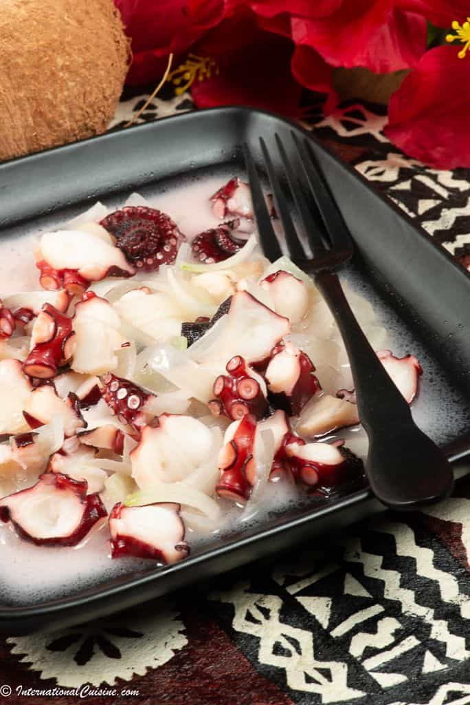

Lu Pulu
Ingredients:
- 1 corned beef
- 6 taro leaves
- 1 cup of coconut cream
Method:
- Wrap corned beef into taro leaves
- Add coconut cream in with the corned beef
- Wrap the corn beef filled taro leaves in foil
- Cook in oven at 180°C for 1 hour until taro leaves are soft and dark green coloured

Feke
Ingredients:
- 1kg octopus
- 1 cup of coconut cream
- 1 onion
- Salt and pepper, and any spice
Method:
- Clean and cut octopus
- Boil until tender
- Add coconut cream and cooked onion
- Cmbine the two and simmer for 10 miuntes